實驗室設備
本實驗室之儀器設備，主要用於探討岩石材料之強度及變形性等力學行為，並支援野外現地調查與工程測量。
岩石試驗設備

RTX-1000 岩石三軸試驗系統
岩石與其他材料最大的差異，在於岩石材料常處於高圍壓之環境。岩石材料在高圍壓下之力學行為與低圍壓截然不同：除了強度會明顯提升外，岩石也會從脆性材料轉換為延性材料。因此，三軸試驗系統為岩石力學中最核心之儀器設備。本儀器由陳勝標校友捐贈，並由王泰典教授購置。
| 型號 | GCTS RTX-1000（美國） |
| 最大載重 | 1000 kN（約 100 噸） |
| 最大圍壓 | 70 MPa（約 2000 公尺深度） |
| 可執行試驗 | 單軸壓縮、三軸、間接張力試驗 |
| 對外服務 | 目前無提供，借用請洽實驗室負責人 |
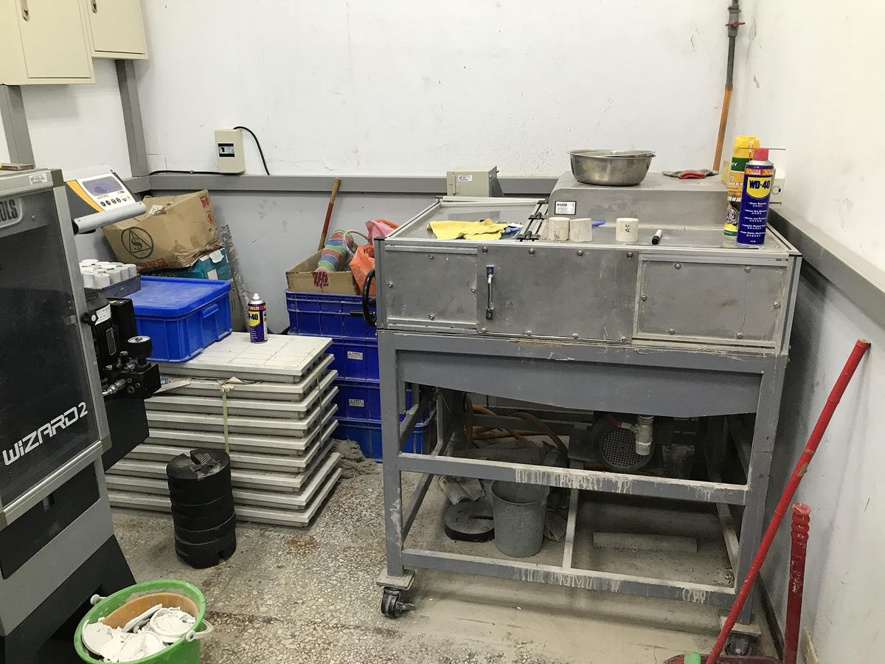
岩心切割機
岩心切割機為製備岩石三軸試驗之重要設備，能將岩心切割為適合試驗操作之尺寸。本實驗室之岩心切割機為國內廠商自行設計，採用冷卻水內置之不排水設計，能裁切直徑 60 mm 以下之岩心樣本。
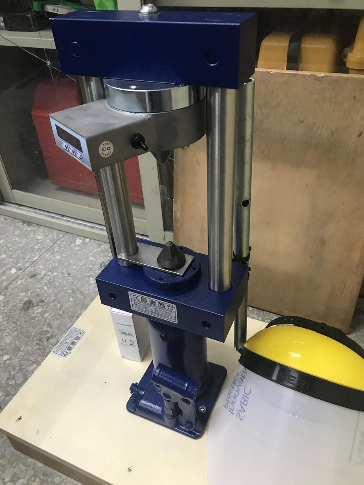
點荷重儀
點荷重儀最初由倫敦帝國學院所開發，透過千斤頂使圓錐伸出並提供點荷重，由試體破壞時的荷重可估計岩石材料之單軸壓縮強度。本實驗室採用英國 ELE 公司之 EL-77，最大荷載 55 kN，試體最大容許直徑 101.6 mm。
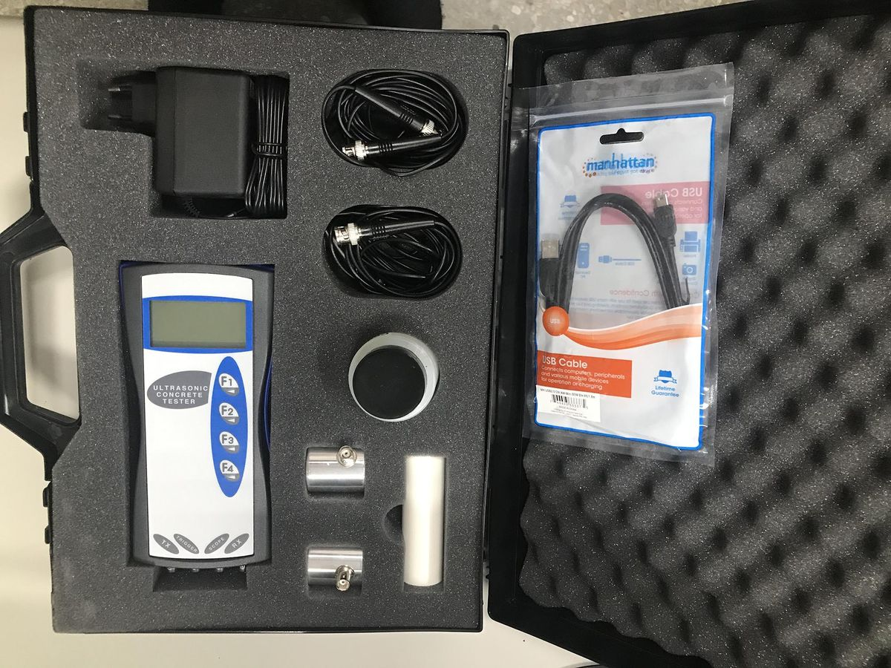
超音波儀
超音波儀可測得材料之超音波波速，透過波速與密度之關係間接求得動彈性係數。本實驗室採用美國 Humboldt 公司之 HC-6390，符合 ASTM C597 規範，測定範圍 0~3000 ± 0.1 μs。
野外調查用小型儀器
野外調查為岩體工程之重要工作，是了解工址特性的第一步。調查地點常於偏僻之處，無法攜帶大型儀器，因此需要小型儀器協助獲得初步的岩體資訊。
| 儀器 | 型號 | 規格 | 用途 |
|---|---|---|---|
| 史密特錘 | MATEST C380（美國） | 衝擊能量 0.225 m-kg | 估算單壓強度 10–70 MPa 之材料 |
| 地質羅盤 | IWAMOTO MINERAL 55 型（日本） | 80 × 66 × 20 mm | 量測地層位態 |
| 地質錘 | — | — | 初估岩石強度、取得新鮮岩石樣品 |
| 起伏計 | — | — | 量測節理面粗糙度並騰繪剖面 |
| 間隙規 | — | — | 量測節理面隙寬 |
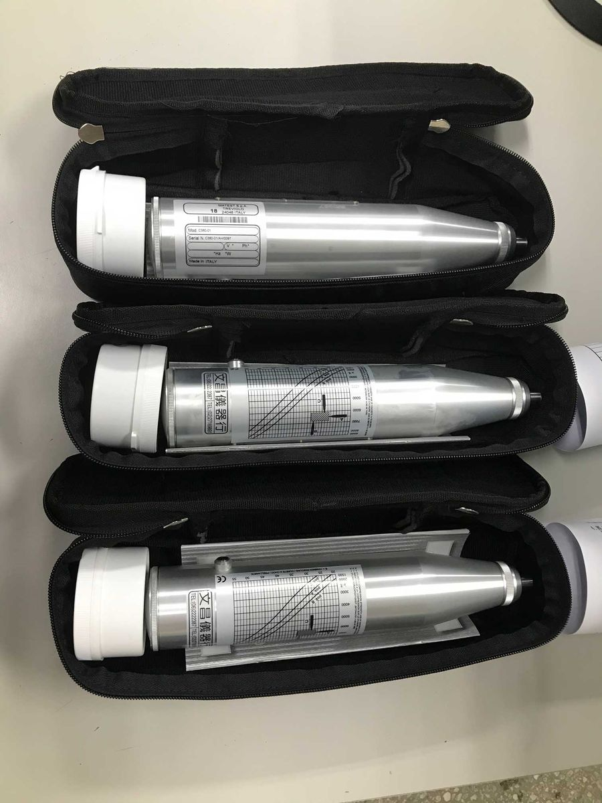
史密特錘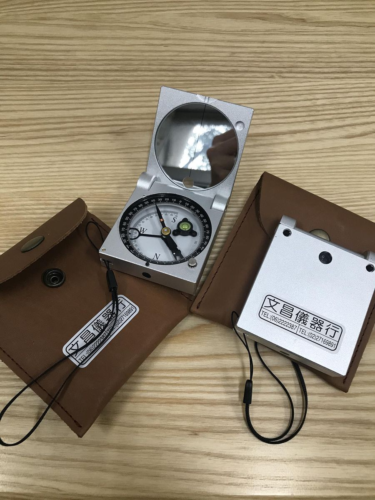
地質羅盤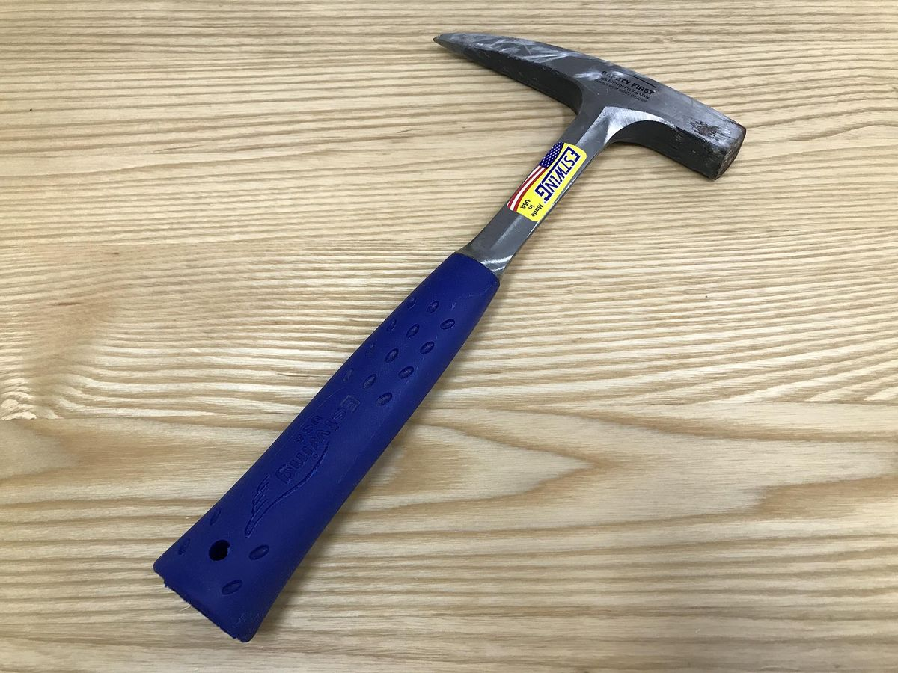
地質錘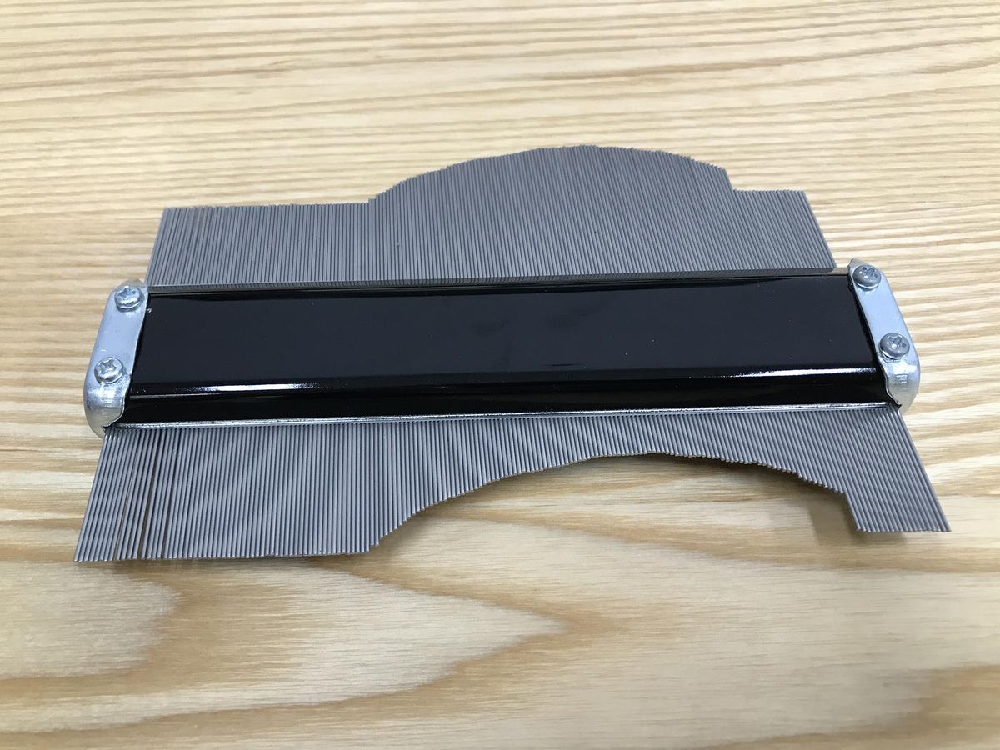
起伏計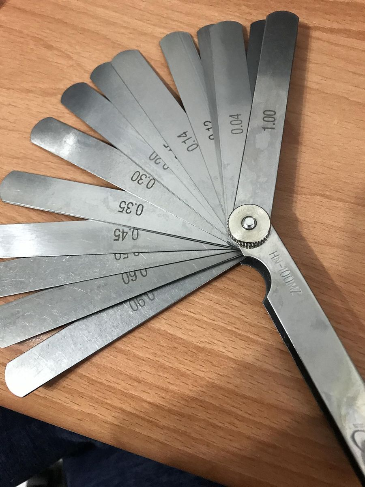
間隙規測量用儀器
測量是大地與資源工程的基礎工作之一，良好的測量成果能提供後續分析與設計十分有力的協助。
| 儀器 | 型號 | 規格 | 用途 |
|---|---|---|---|
| 水準儀 | Topcon AT-F6（日本） | 一公里量測誤差 2.5 mm | 工程現場水準測量 |
| 經緯儀 | Nikon NT-2D（日本） | — | 量測水平及垂直角度 |
| 全站儀 | Leica TS06-plus（德國） | 工作範圍 5–150 m，100 m 處定向精度 5 cm | 角度、距離、高程差整合測量 |
| GPS 衛星定位儀 | — | — | 導航定位與各種測量作業 |
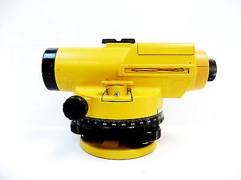
水準儀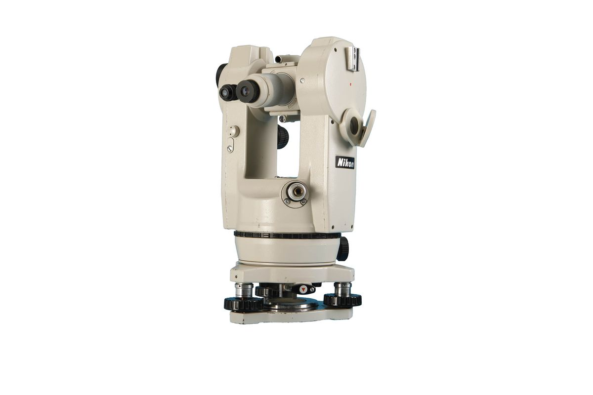
經緯儀 全站儀
全站儀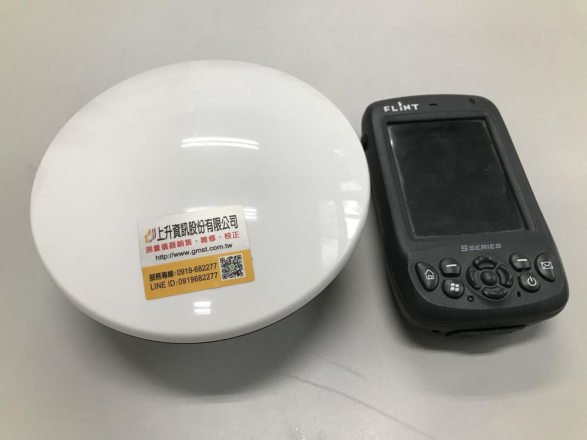
GPS 衛星定位儀